The Forecast Pipeline is the core intelligence layer of the system, responsible for transforming unstructured news data into structured market sentiment analysis. It utilizes a specialized LLM "Outline" that acts as a Russian macro-analyst to evaluate geopolitical and economic events.
The pipeline is initiated via the forecast function, which calls the ForecastOutline using the agent-swarm-kit framework. The process follows a strict sequence: gathering news, establishing temporal context, applying a persona-driven prompt, and validating the structured output against a predefined contract.
The following diagram illustrates the transition from the high-level forecast call to the internal registration and execution of the ForecastOutline.
Diagram: Forecast Execution Logic

The ForecastOutline is registered using addOutline<ForecastResponseContract>. It defines how the LLM should be prompted, which tools it uses, and how the output is structured.
FORECAST_PROMPT)The system instructs the LLM to behave as a macro-market analyst. The prompt enforces several heuristic rules:
bullish, bearish, neutral, or sideways.getOutlineHistory)Before the prompt is sent, the system prepares the conversation history:
commitGlobalNews function is invoked. It queries the TavilyNewsAdvisor for the last 24 hours of global news.The pipeline ensures high-quality signals by enforcing a strict JSON schema and secondary validation rules.
The LLM must return an object conforming to the following structure:
| Property | Type | Allowed Values | Description |
|---|---|---|---|
sentiment |
string |
bullish, bearish, neutral, sideways |
The primary market direction based on news. |
confidence |
string |
reliable, not_reliable |
Whether the news background is clear or contradictory. |
reasoning |
string |
N/A | Explanation of which news events drove the decision. |
After the LLM generates a response, it passes through a validations array. These rules act as a guardrail:
reasoning field is empty.Once a forecast is validated, it is automatically persisted for debugging and backtesting purposes.
Diagram: Forecast Data Flow

The onValidDocument callback uses dumpOutlineResult to save the successful forecast to the local file system at ./dump/outline/forecast. This allows developers to inspect the LLM's reasoning for specific trades after the fact.